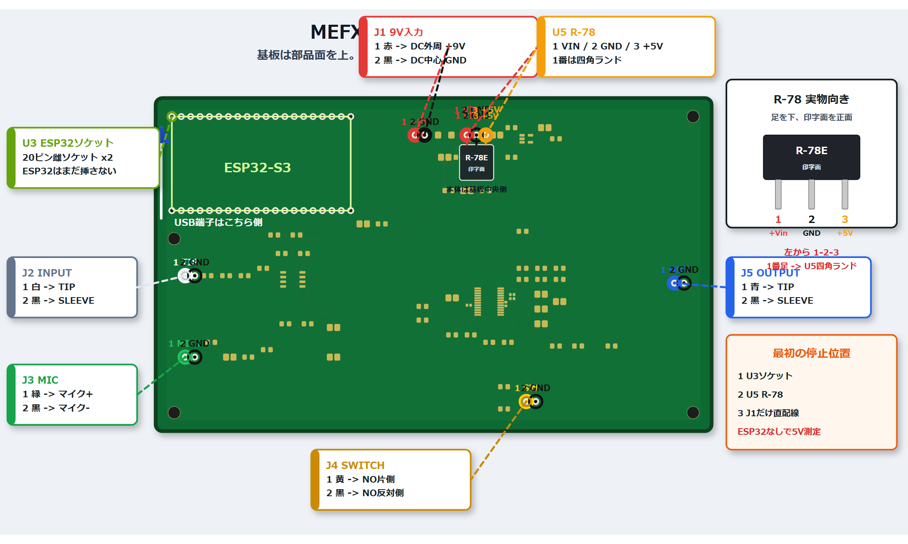

MEFX-S3: ESP32-S3を使ったギター・ベース用マルチエフェクター試作
回路基板、ESP32ファームウェア、Windowsアプリ、音色プリセット管理を一体で作る製作研究
楽器の音をESP32でリアルタイムに変化させ、PCアプリから音色を作って本体へ送る小型エフェクターを作るプロジェクト。
要旨
本研究では、ESP32-S3を中心に、ギターとベースの両方で使えるマルチエフェクター試作機を製作した。 本体は9V電源、音声入出力回路、フットスイッチ、マイク監視、Bluetooth通信を持つ。 アプリ側では、音色を0から100の値で編集し、プリセットとして保存し、Bluetooth Low EnergyでESP32へ送る。 PC上ではIR畳み込みを使った試聴やTone Matchの入口も用意した。
現時点では、アプリ、基板データ、ESP32ファームウェア、組み立て資料がそろい、実機の電源・音声確認へ進む段階である。 YouTube音色コピーは、現在は画面とデータの流れを確認できる段階であり、本格的な音源分離と推定精度の評価は今後の課題である。
研究の目的
- 楽器の音をデジタル処理で変化させる仕組みを作る。
- PCアプリから音色を作り、ESP32本体へ送れるようにする。
- スマホやPCが外れても、本体だけで保存済み音色を使えるようにする。
- 高価なクラウド処理に頼らず、できるだけローカルで解析する。
目標は市販品レベルの完成品ではなく、「実際に作って検証できる製品試作 v1」である。
全体の仕組み
アプリはBluetoothで「音声そのもの」ではなく「音色の設定値」を送る。 そのため演奏中に毎回PCへ通信する必要がなく、本体だけで音を変えられる。
本体ハードウェア
| 部品 | 役割 |
|---|---|
| ESP32-S3 | 音声処理、Bluetooth、プリセット管理を行う中心部。 |
| CS4270 | アナログ音声とデジタル音声を変換するオーディオCODEC。 |
| TL072 | 楽器入力を扱いやすい信号に整えるオペアンプ。 |
| R-78E5.0 | 9Vから5Vを作るDC/DC電源。 |
| AP2112K-3.3 | 5Vから3.3Vを作るLDO電源。 |
| フットスイッチ | 短押しでプリセット切替、長押しでバイパス切替。 |
基板と組み立て

基板はJLCPCB向けGerber/BOM/CPLを作成済み。SMT部品は工場実装、ESP32ソケット、R-78、ジャック、スイッチ、マイクは手はんだで取り付ける。
Windowsアプリ
Manual Editor
Gain、EQ、Compressor、Drive、Modulation、Delay/Reverbを0から100で調整する。
Library
作った音色を保存、読込、削除、名前変更できる。
Tone Match
YouTube URLや解析結果から音色候補を作る入口。現段階では仮解析とサーバー解析の流れを確認する。
Audio FX
PC入力音にIR畳み込みをかけ、音の変化をA/B比較できる。
ESP32内部の処理
- 48 kHzのI2S音声を64サンプルずつ読む。
- 保存済みプリセットをNVSから読み込む。
- ゲイン、コンプレッサー、歪み、FIRフィルタ、揺れ、ディレイを軽く計算する。
- 処理後の音声をI2SでCODECへ戻す。
- BLEで接続状態や音量メーターを低い頻度でアプリへ通知する。
重要な工夫: PC用の長いWAV IRはそのままESP32へ送らず、deviceToneという軽い値に変換する。
通信データ
Bluetoothでは、音声ファイルではなくJSON形式のプリセットを送る。 例として、楽器種別、音色名、6種類のエフェクト値、バイパス状態、作成元を持つ。
| データ | 方向 | 内容 |
|---|---|---|
| PresetWrite | アプリ -> 本体 | プリセット送信 |
| PresetList | 本体 -> アプリ | 保存済み一覧 |
| DeviceStatus | 本体 -> アプリ | 接続、モード、電源状態 |
| AudioTelemetry | 本体 -> アプリ | 入力、出力前、マイクの音量 |
できたもの
- Windowsアプリの画面
- プリセット保存と編集
- シミュレーター
- BLE通信仕様
- KiCad基板データ
- ESP32ファームウェア構成
- 9V、5V、3.3Vの実測
- ESP32実機BLE接続
- ギター/ベース音出し
- フットスイッチ動作
- Tone Matchの本格解析精度
考察
この試作では、音色作成、保存、通信、基板設計を一つのシステムとしてつなげた点が大きな成果である。 一方、音のよさや遅延の少なさは、実際のギターやベースをつないで測定しないと判断できない。 そのため次の段階では、電源を安全に確認したあと、入力、出力、Bluetooth、音質を順番に検証する。
結論
MEFX-S3は、ESP32-S3、専用基板、PCアプリ、BLE通信、DSP処理を組み合わせたマルチエフェクター試作である。 現時点で、設計資料とソフトウェアの土台はそろっており、実機組み立てと測定に進める状態になった。
今後は、電源確認、ESP32書き込み、BLE接続、音声入出力の順に検証し、最終的にギターとベースの両方で使える試作v1の完成を目指す。
- プロジェクト資料: docs/プロジェクト作業レポート.md
- 基板監査資料: docs/pcb-assembly/07_order_package/
- BLE仕様: shared/ble-contract.md
- 関連理論: Udo Zolzer編, DAFX: Digital Audio Effects
- 関連理論: M. R. Schroeder, Natural Sounding Artificial Reverberation, 1962